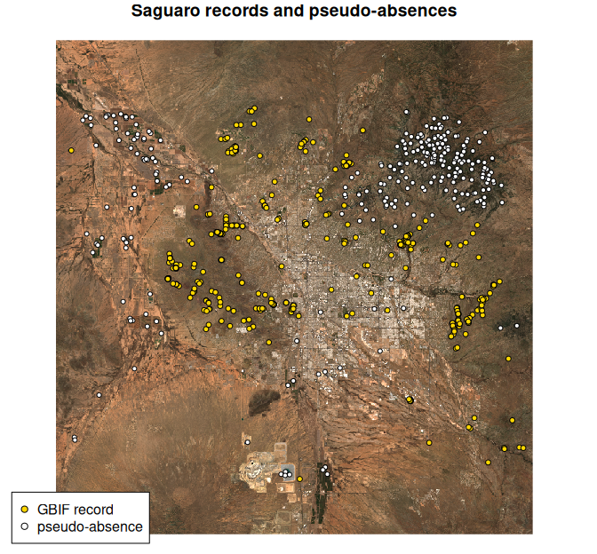

AlphaSDM fits species distribution models on Google’s AlphaEarth satellite embeddings: 64 numbers per 10 m pixel that summarise what the land surface looks like there, for every year since 2017. Sampling, model fitting and mapping all run on Google Earth Engine, so there are no environmental layers to find, download or align.
This vignette maps saguaro cactus (Carnegiea gigantea) around Tucson, Arizona, from public GBIF records to a habitat-suitability map, and uses each step of the workflow once.
Before you start, connect to Earth Engine once per
machine with setup_gee(project = "your-cloud-project"); the
README explains the free registration. After that, AlphaSDM connects on
its own.
Get occurrence records
The GBIF occurrence API is public and needs no account. This query asks for 2022 records inside a box around Tucson, keeping only those with coordinates accurate to 30 m, which suits 10 m embeddings. The API returns at most 300 records per request, so it takes two pages.
url <- paste0(
"https://api.gbif.org/v1/occurrence/search?",
"scientificName=Carnegiea%20gigantea&year=2022",
"&hasCoordinate=true&hasGeospatialIssue=false",
"&coordinateUncertaintyInMeters=0,30",
"&decimalLongitude=-111.4,-110.6&decimalLatitude=31.9,32.6&limit=300")
obs <- do.call(rbind, lapply(c(0, 300), function(offset)
jsonlite::fromJSON(paste0(url, "&offset=", offset))$results[
, c("decimalLongitude", "decimalLatitude", "year")]))
nrow(obs)
#> [1] 438Format the records
format_data() standardises column names, checks that
coordinates are WGS84 longitude and latitude, and drops records outside
the years the embeddings cover. With no presence column,
every row is a presence.
pres <- format_data(obs, coords = c("decimalLongitude", "decimalLatitude"),
year = "year")Add pseudo-absences
Models need absences too, and where artificial absences go is a
modelling decision (Barbet-Massin et al. 2012), so AlphaSDM asks you to
choose a strategy. "combined" keeps them away from the
presences both geographically and in embedding space, the recipe
recommended for the tree models in the default ensemble.
aoi = "bbox" draws them inside the bounding box of the
presences, and aoi_year reads them from the same year’s
embeddings as the records.
occ <- generate_pseudo_absences(pres, aoi = "bbox", strategy = "combined",
n = nrow(pres), aoi_year = 2022)
table(occ$present)
#>
#> 0 1
#> 282 432It asked for as many absences as presences but found 282: most of the
box looks like saguaro habitat in embedding space, and the function
reports a shortfall rather than place absences inside habitat. The
exclusion radius (250 m) and envelope threshold it estimated are stored
in attr(occ, "pa_settings").
Look at the data
Plot the points on a satellite image before modelling them. This one is a cloud-free Sentinel-2 composite for 2022, made on Earth Engine and downloaded as a small RGB GeoTIFF.
ee <- reticulate::import("ee")
box <- ee$Geometry$Rectangle(c(-111.4, 31.9, -110.6, 32.6))
sentinel2 <- ee$ImageCollection("COPERNICUS/S2_SR_HARMONIZED")$
filterBounds(box)$
filterDate("2022-01-01", "2023-01-01")$
filter(ee$Filter$lt("CLOUDY_PIXEL_PERCENTAGE", 10))$
median()$
visualize(bands = list("B4", "B3", "B2"), min = 0, max = 3500)
tif <- tempfile(fileext = ".tif")
utils::download.file(sentinel2$getDownloadURL(list(
region = box, scale = 100, crs = "EPSG:4326", format = "GEO_TIFF")),
tif, mode = "wb", quiet = TRUE)
plot(stars::read_stars(tif), rgb = 1:3, reset = FALSE,
main = "Saguaro records and pseudo-absences")
points(latitude ~ longitude, data = occ[occ$present == 0, ],
pch = 21, cex = 0.7, bg = "white")
points(latitude ~ longitude, data = occ[occ$present == 1, ],
pch = 21, cex = 0.8, bg = "gold")
legend("bottomleft", inset = 0.02, bg = "white",
legend = c("GBIF record", "pseudo-absence"), pch = 21,
pt.bg = c("gold", "white"))
The records sit on the desert slopes and foothills around the city, where saguaros grow. The pseudo-absences went where the landscape differs: mostly the forested upper Santa Catalina Mountains to the northeast and the irrigated farmland of the Avra Valley to the west, with a few in town and around the open-pit mine to the south.
Evaluate on a spatial holdout
Hold out one spatial cluster of points, presences and absences alike, fit the default ensemble (svm, rf and gbt) on the rest, and score the holdout. A spatial holdout is harder than a random one, because the models must transfer to ground they have not seen.
set.seed(1)
occ$block <- stats::kmeans(occ[, c("longitude", "latitude")], centers = 5)$cluster
test <- occ$block == 1
fit <- evaluate_models(data = occ[!test, ], predict_coords = occ[test, ])
metrics <- do.call(rbind, lapply(fit$metrics, as.data.frame))
knitr::kable(metrics[, c("auc_roc", "auc_prg", "tss", "cbi")], digits = 3)| auc_roc | auc_prg | tss | cbi | |
|---|---|---|---|---|
| svm | 1.000 | 0.976 | 1.000 | 0.802 |
| rf | 1.000 | 0.976 | 1.000 | 0.861 |
| gbt | 0.986 | 0.923 | 0.891 | 0.443 |
| ensemble | 0.998 | 0.968 | 0.968 | 0.864 |
Read these scores with care. The held-out absences are
pseudo-absences, placed where the landscape looks least like saguaro
habitat, so they are easier to tell from presences than real absences
would be. For an honest measure of discrimination, score real survey
absences. The Boyce index (cbi) measures calibration and
needs only presences, so it is the more informative number here.
Map suitability
generate_map() refits the models on all the data and
writes one GeoTIFF per model plus the ensemble mean.
aoi = "bbox" maps the whole area the points cover, about 75
by 78 km. At 30 m that is six map tiles, which download from Earth
Engine in parallel in about three minutes; the native 10 m resolution
(scale = 10) takes about ten.
maps <- generate_map(occ, aoi = "bbox", scale = 30, aoi_year = 2022,
output_dir = file.path(tempdir(), "saguaro"))
plot(stars::read_stars(maps$ensemble_map), main = "Saguaro suitability, 30 m",
col = grDevices::hcl.colors(20, "YlGn", rev = TRUE))
Suitability follows the slopes and drainages of the Tucson Mountains and the foothills ringing the city, and fades on the valley floors, the farmland and the high Catalinas.